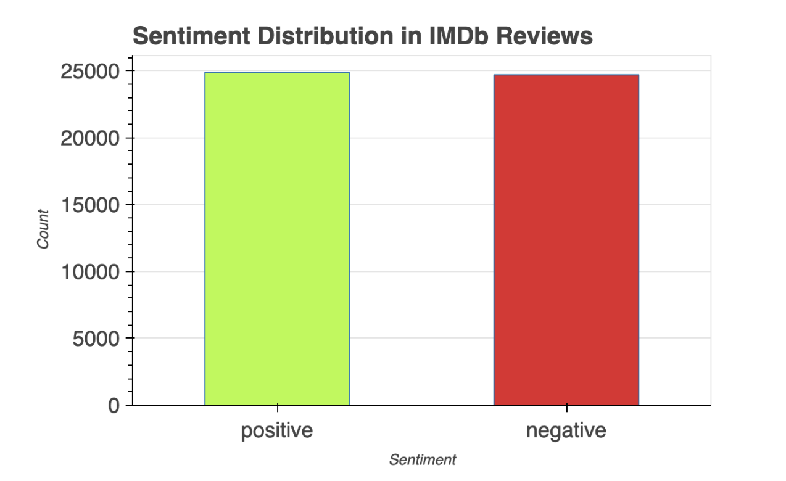
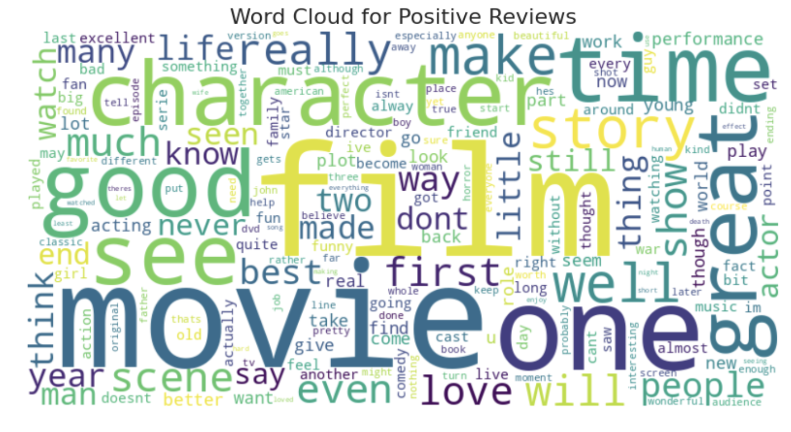
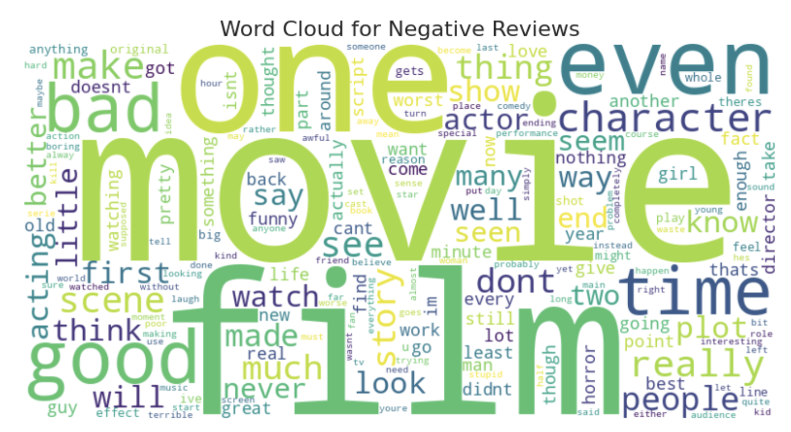
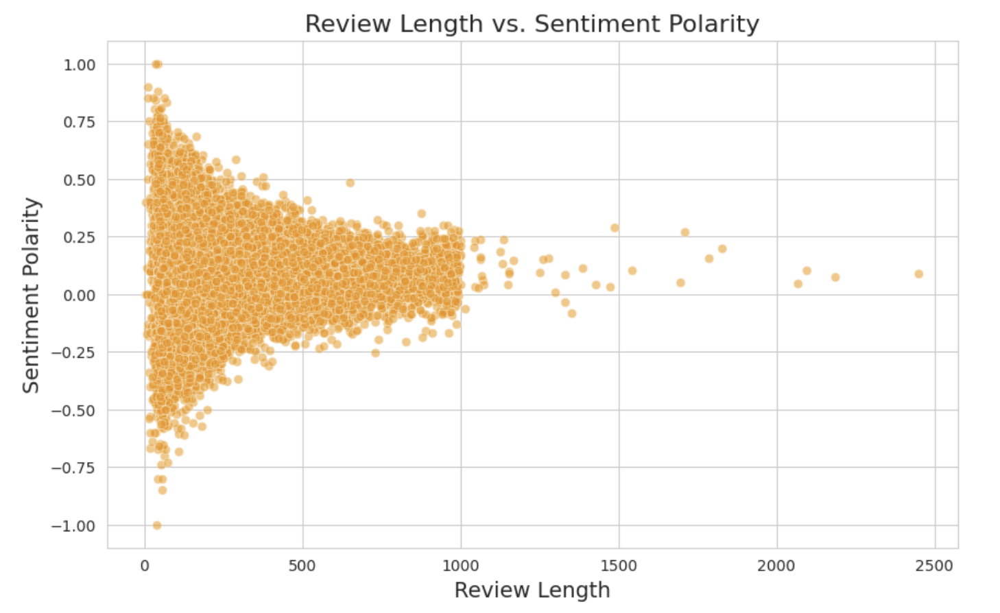
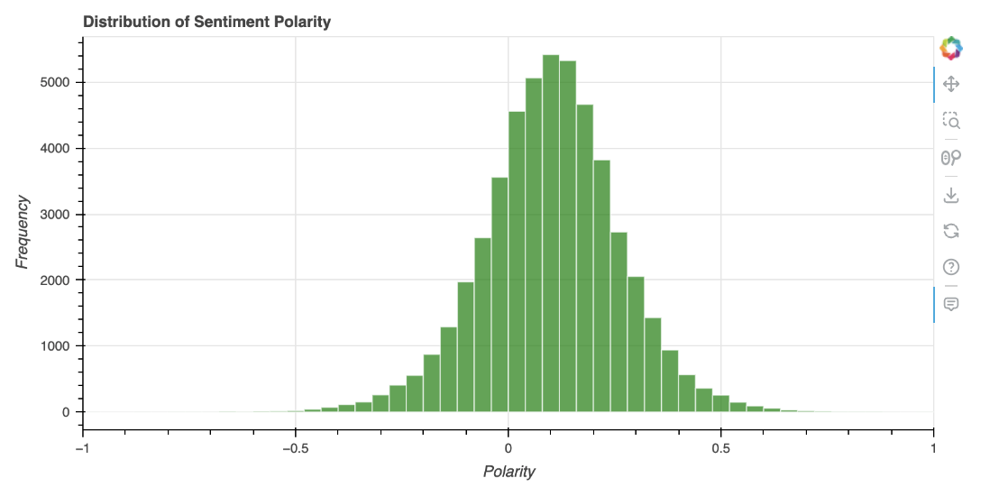
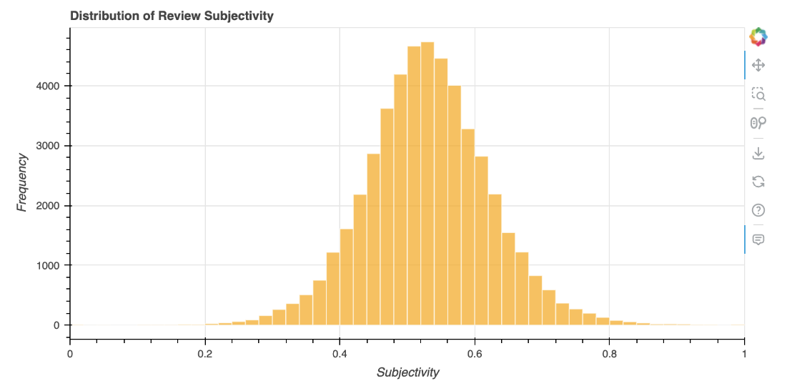

IMDb Movie Reviews Sentiment Analysis
Exploratory Data Analysis and NLP Sentiment Analysis
Project Overview
This project explores a dataset of 50,000 IMDb movie reviews, focusing on how user sentiment correlates with review length and linguistic style. By utilizing TextBlob for polarity and subjectivity, the analysis identifies the threshold where a review shifts from “emotional outburst” to “analytical critique.”
View Project on GitHub Open in Colab Dataset (Kaggle)
The NLP Pipeline
The project follows a structured NLP pipeline to transform unstructured text into quantifiable metrics:
- Data Acquisition: Utilization of the IMDb 50k dataset (Maas et al., 2011).
- Text Preprocessing:
- Cleaning: Removal of HTML tags, punctuation, and special characters.
- Normalization: Lowercasing text for consistency.
- Tokenization & Filtering: Segmenting text and removing “stopwords” (common fillers) to focus on high-impact keywords.
- Exploratory Data Analysis (EDA): Statistical analysis of review lengths and word frequency distributions.
- Sentiment Modeling: Implementing the
TextBloblibrary to calculate Polarity and Subjectivity. - Correlation Analysis: Cross-referencing review length against polarity scores.
1. Sentiment Distribution
Insight: The dataset exhibits a balanced sentiment distribution with 25,000 positive and 25,000 negative reviews. This parity ensured that the analysis of word frequencies and emotional weights remained unbiased across both sentiment classes.

2. Visualizing the Lexicon (Word Clouds)
Insight: Frequency analysis through Word Clouds revealed distinct linguistic patterns.


Positive reviews include the words “film,” “movie,” “great,” “story,” and “time,” suggesting that reviewers focus on the quality of the story and overall enjoyment.
Negative reviews also highlight “film” and “movie,” but words like “bad,” “even,” and “really,” indicating stronger dissatisfaction are also used a lot.
The common words suggests that although both sentiments discuss similar aspects, their tone and context significantly differ.
3. The Brevity Paradox: Review Length vs. Sentiment Polarity
Insight: This analysis explores the “Inverse Correlation” between how much a user writes and the emotional extremity of their review.
- The Correlation: A weak negative correlation (-0.049) indicates that as review length increases, sentiment polarity slightly decreases. In short, longer reviews contain less extreme opinions.
- Short Reviews (<200 words): These frequently exhibit very high or very low polarity, demonstrating stronger, more impulsive emotions.
- Long Reviews (>500 words): These tend to cluster around a neutral sentiment. This suggests that users who write more are providing a detailed analysis rather than emotional extremes.
- Key Discovery: Users who write brief reviews tend to express stronger emotions, while longer reviews are more balanced and focused on the movie’s details.

4. Sentiment Polarity & Subjectivity Distributions
Insight: These histograms visualize the frequency of emotional scales and the “fact vs. opinion” nature of the 50,000 reviews.


Polarity Distribution (Emotional Scale)
- General Bias: 74.7% of reviews are moderately positive (0 to 0.5), showing a general community bias toward positive sentiment.
- Negative Sentiment: Moderately negative reviews (-0.5 to 0) make up 24.1%, indicating that while negative reviews exist, they are less extreme.
- The Extremes: Highly polarized reviews are rare; the dataset contains only 57 highly negative reviews compared to 471 highly positive ones.
Subjectivity Distribution (Fact vs. Opinion)
- The “Opinionated” Middle: 59.8% of reviews are moderately subjective (0.5 to 0.7). This suggests users provide a mix of opinion and fact without being overly exaggerated.
- The Rarity of Objectivity: Only 0.88% of reviews are extremely objective. Purely factual reviews are exceptionally rare on IMDb.
- Final Insight: Reviews tend to be opinionated but not overly extreme, with extremely subjective reviews (3.6%) also being uncommon.
5. Final Conclusions
Based on the experimental results in the report and notebook:
- Sentiment Trends: While the dataset is balanced, moderately positive reviews are the most common across the 50,000 samples.
- Emotional Intensity: There is a clear inverse relationship between length and extremity; short reviews are brief and to the point with high emotional volatility.
- Platform Behavior: The high subjectivity scores across the board establish IMDb as a platform driven by personal fan expression rather than objective, fact-based film theory.
Complete Analysis Notebook
To view the full Python implementation, complete methodology, and execution logs, please visit the technical notebook page.
The complete methodology, data analysis, and insights are detailed in the full technical report.